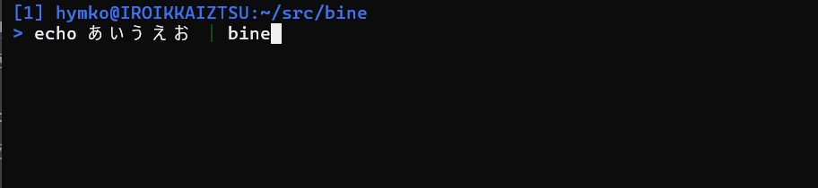

Bine - A terminal binary editor
( English / Japanese )



Bine は非同期ロードとパイプライン入出力に対応した高速なターミナル用バイナリエディターです
主な機能
-
非同期ロードによる高速起動
ビューアは即座に起動し、データをバックグラウンドで読み込みます。大きなファイルでも、起動直後から操作を開始できます。 -
16進数と文字表示のスプリットビュー
画面は16進数表示と文字表示に約 2:1 で分割されます。対応エンコーディングは UTF-8、UTF-16（LE/BE）、および現在の Windows コードページです。キー操作でエンコーディングをその場で切り替えられます。 -
vi スタイルのナビゲーション
カーソル移動はviでおなじみのキーバインド（h、j、k、lなど）に準拠しており、使い慣れたユーザーはスムーズに操作できます。 （注：ファイル名の入力には Emacs スタイルのキーバインドを使用します。） -
ファイルおよび標準入力／出力に対応
bineはファイルだけでなく標準入力からもバイナリデータを読み込めます。 編集したデータは標準出力へ書き出すこともでき、コマンドパイプラインでの利用にも適しています。 -
マルチバイト文字のスマートデコードとアノテーション
マルチバイト文字はバイト構造に基づいて視覚的にグループ化されます。BOM や改行などの制御文字といった特殊なコードポイントには、読みやすい名称やシンボルが付記されます。バイナリとテキストが混在するデータの把握や、文字コード問題のデバッグに役立ちます。 -
最小限の画面占有
bineは必要な行数だけを使用します（1行 = 16バイト）。全画面を占有しないため、周囲のターミナル出力を見ながら、小さなバイナリデータを手軽に確認・編集できます。 -
クロスプラットフォーム
Go で書かれており、Windows および Linux で動作します。その他の Unix 系システムでもビルド・動作するはずです。
インストール
Manual installation
Releases よりバイナリパッケージをダウンロードして、実行ファイルを展開してください
eget インストーラーを使う場合 (クロスプラットフォーム)
brew install eget # Unix-like systems
# or
scoop install eget # Windows
cd (YOUR-BIN-DIRECTORY)
eget hymkor/bine
scoop インストーラーを使う場合 (Windowsのみ)
scoop install https://raw.githubusercontent.com/hymkor/bine/master/bine.json
もしくは
scoop bucket add hymkor https://github.com/hymkor/scoop-bucket
scoop install bine
"go install" を使う場合 (要Go言語開発環境)
go install github.com/hymkor/bine/cmd/bine@latest
go install は $HOME/go/bin もしくは $GOPATH/bin へ実行ファイルを導入するので、bine を実行するにはそのディレクトリを $PATH に追加する必要があります。
起動方法
$ bine [FILES...]
または
$ bine < in.bin > out.bin
データを編集し、保存時にファイル名として - を指定すると、編集結果を標準出力へ書き出します。
キー操作
カーソル移動
h,BACKSPACE,ARROW-LEFT,Ctrl-B
カーソルを左へ移動j,ARROW-DOWN,Ctrl-N
カーソルを下へ移動k,ARROW-UP,Ctrl-P
カーソルを上へ移動l,SPACE,ARROW-RIGHT,Ctrl-F
カーソルを右へ移動0(zero),^,Ctrl-A
カーソルを行頭へ移動（0はコマンドモード（後述）のみ利用可能）$,Ctrl-E
カーソルを行末へ移動<
カーソルをファイル先頭へ移動>,G
カーソルをその時点で読み込まれているファイル末尾へ移動&
指定したアドレスへジャンプ
編集
r
カーソル位置の1バイトを編集する（画面最下行に現在値を表示し、readline で新しい値を入力する）i
カーソルの左へデータを挿入する（例:0xFF,U+0000,"string"）a（コマンドモードのみ）
カーソルの右へデータを挿入する（例:0xFF,U+0000,"string"）I
カーソルの左へ0x00を挿入するA
カーソルの右へ0x00を挿入するx,DEL
カーソル位置の1バイトを削除し、内部バッファに記憶するv
選択モードを開始/終了するy
選択された領域を内部バッファへコピーする。選択されていない時はカーソル位置の1バイトをコピーするd
選択された領域を削除し、内部バッファへコピーする。選択されていない時はxと同じp
内部バッファのデータをカーソルの右へ挿入するP
内部バッファのデータをカーソルの左へ挿入するR
ダイレクト編集モード（Direct edit mode）へ切り替える。 このモードでは0〜9、a〜fの入力で、カーソル位置のバイトの上位ニブル・下位ニブルを順に直接書き換える。 もう一度Rを押すと元のコマンドモード（Command mode）へ戻る。
検索
/
カーソル位置から前方（アドレス増加方向）へ検索する?
カーソル位置から後方（アドレス減少方向）へ検索する
/ もしくは ? の押下後、検索パターンを画面下より入力する。
次のようなフォーマットのパターンを指定できる
U+XXXX
Unicode code point (e.g.U+3042)0xXX
Hexadecimal byte sequence (e.g.0xFE 0xFF)- Decimal numbers
Byte values in decimal (e.g.65 66 67) "string"oru"string"
Text string (UTF-8;uprefix is optional)
n
直前の検索を同じ方向に繰り返すN
直前の検索を逆方向に繰り返す
表示切り替え
Meta-U
エンコーディングを UTF-8 へ変更する（デフォルト）Meta-A
エンコーディングを ANSI（Windows の現在のコードページ）へ変更するMeta-L
エンコーディングを UTF-16LE へ変更するMeta-B
エンコーディングを UTF-16BE へ変更する
Meta- は Alt キーと同時に押下するか、Esc を押下してからそのキーを押下することを意味します。
その他
u
直前の変更を取り消す。繰り返し入力することで、過去の変更を順に取り消せる。w
変更をファイルに保存するq
終了する。未保存の変更がある場合は、保存するか確認する
Changelog
Contributing
- 不具合報告や改善提案は歓迎です。言語は英語もしくは日本語の一方のみで大丈夫です。
- コード中のコメント・コミットメッセージは英文でお願いします。
- プルリクエストについて、その時点で
developブランチがあるようであれば、そちらへお願いします。なければmasterで OK です。 - コードの修正に伴って必要になってくるテストコード・ドキュメント修正があると嬉しいですが、必須とはしません。適宜こちらでフォローします。